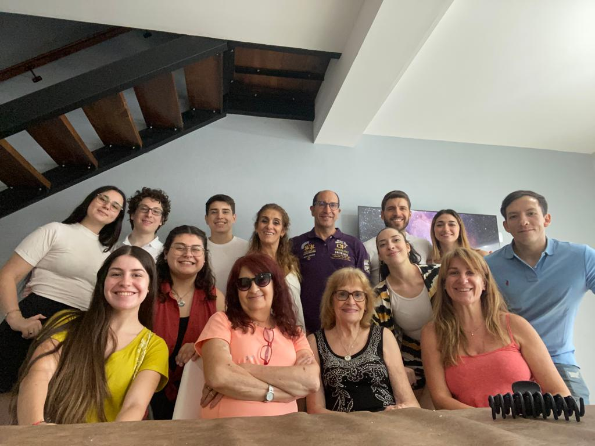

Debo disculparme de ante mano por esto, pero esta flor, será bastante triste ciertamente.
¿Recuerdas este día Sofia? Fue el primer y único día donde fuimos todos a la casa de Luz María, donde mis tíos pudieron visitarla y conocerla.
Esta foto, es demasiado especial, ya que es la última foto que tenemos toda la familia con Luz María, antes de lo que ha ocurrido, y, en esta foto,
también estás tú, también estas formando parte de la familia, de ese hermoso momento donde Luz María fue tan pero tan feliz de recibirnos a todos en su casa y compartir con nosotros.
Te agradezco que seas parte de esta foto, te agradezco de que hayas sido parte de mi familia, agradezco que en este último recuerdo de ella, tú aparezcas, gracias por haber estado conmigo ahí,
gracias por haber compartido conmigo. Seguramente, ver esta foto te traerá un montón de emociones, por ese motivo me he disculpado al inicio.
No voy a extender este recuerdo mucho más sin que terminemos en un mar de lagrimas ambos.
Nuevamente, gracias por haber estado en este último recuerdo de Luz María feliz, la hiciste muy feliz a ella y a mi.
Esta canción es para recordar que ella está con nosotros aún.